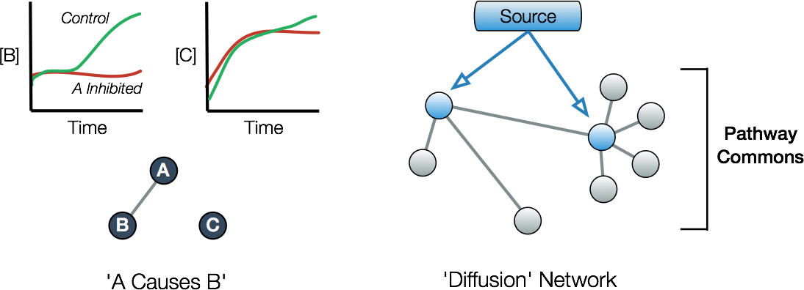

Cause and Effect
Quick Summary
- Change in the abundance of a gene by inhibiting another defines a ‘causal’ interaction
- DREAM 8 challenge tasked participants to infer causality in a kinase signaling network
- First place relied on a prior signaling network created from Pathway Commons to augment use of training data
- Second place relied on the same prior built from Pathway Commons and used no training data
Author Profile
The Dialogue on Reverse Engineering Assessment and Methods (DREAM) pose fundamental questions about systems biology and translational medicine. It is designed and run by a community of researchers (Stolovitzky 2007).
Context
The 2006 Netflix Prize challenged teams to submit algorithms that could predict user film ratings. A dramatic end to the competition awarded the $1 million prize to ‘BellKor’s Pragmatic Chaos’. Alas, commerce trumped technology: Netflix never used the algorithm because the additional gains in accuracy afforded to them couldn’t justify the engineering effort. Caveats aside, challenges are popular ways to assess algorithms empirically by testing their recovery of experimental and synthetic test data. The Dialogue for Reverse Engineering Assessment and Methods (DREAM) consortium asks an analogous question: How well are reverse engineers doing?
Question
Is it feasible to algorithmically derive causal networks in mammalian cell signaling components?
Goals
The eighth Heritage Provider Network (HPN) DREAM Breast Cancer Network Inference Challenge tasked participants with generating predictive causal networks. The test sidesteps the thorny philosophical issues surrounding causality by providing an operational definition: Inhibition of one element that alters the abundance of another. This is codified in networks by a directed edge accompanied by a measure of the magnitude of influence (Fig. 1).
The setup for an experimental sub-challenge was straightforward: Participants were provided with training data containing levels of tyrosine kinase signaling pathway components observed with the help of antibodies. Teams submitted a network consisting of nodes (genes) and weighted edges (causality strength). Submissions were scored on their ability to recapitulate causal relationships observed following inhibition of a network node that was not in the training data.
Approach
The challenge tested the ability of participants to collect and integrate prior knowledge, process training data, and implement their algorithms in order to generalize to test observations. In all, teams submitted 32 causal networks each defining a ‘context’ consisting of a cell-type under a particular perturbation. These 32 contexts consisted of data from 4 breast cancer cell lines under 8 perturbations composed of varying combinations of 8 stimuli (e.g. serum), 3 kinase antibody inhibitors, and 2 cytokines. Each of the participant’s 32 networks was scored by collecting data from cells treated with an mTOR inhibitor, observing any significant changes in abundance of proteins in the pathway, then determining whether these casual links were present in the submission. Teams were ranked within each of the 32 contexts and an average rank was used to define the top performers.
After crunching the data from the challenge, several broad patterns observed in previous DREAMs re-emerged (Marbach 2012). First, there exists no ‘best’ mathematical approach reinforcing the idea that the art of implementation is key. Second, aggregating submissions - even randomly - was a robust strategy to generate high scores. Last, integrating prior knowledge about the signaling network boosted performance of inference to a surprising degree.
The top scorer with the catchy name ‘PropheticGranger with heat diffusion prior’ used statistical regression which aims to learn how any number of system inputs explain changes (i.e. variance) in a target over time. Granger methods in particular seek to answer the question: Given the level of a target gene at some point in time, at any time do other genes provide additional information about the target’s abundance over and above information in the target history? If yes, then the extent of this additional information is encoded as the strength of causality between two genes.
“Second place team ‘Limax’ in this challenge submitted only the prior derived by applying heat diffusion to the Pathway Commons data. Its success is notable precisely because it required none of the training data!”
Backing up one step, Granger regression requires a set of genes that are ‘close’ to the target that may be considered in a causal analysis. In other words, they reasoned that proteins are more likely to be perturbed by the inhibition of other proteins ‘nearby’. To quantify network distance, a ‘diffusion’ approach was employed. This is analogous to (insert analogy here) (Fig. 1, right).
To this end, members of PropheticGranger constructed just such a heat diffusion network prior consisting of distances between training data genes based solely on knowledge from Pathway Commons (Cerami 2010). In their own words, “We chose Pathway Commons as our external source of data due to its comprehensive coverage of the biological pathways implicated in breast cancer”. In total, 495 pathways were extracted in the rich BioPAX (Demir 2010) format and 263 were retained because they contained at least two genes in the training data. Each pathway was then translated into a simple, undirected network of representing proteins and regulatory interactions and the aforementioned diffusion approach was applied to recover a set of gene distances. Finally, individual sets for each pathway were averaged after removing genes not present in the training set (and therefore not observable) to produce a final signaling network prior.
“We chose Pathway Commons as our external source of data due to its comprehensive coverage of the biological pathways implicated in breast cancer”
Team PropheticGranger recognized that the success of DREAM 7 participants stemmed from incorporating prior biological knowledge about the network (Costello 2014). How key? Second place team ‘Limax’ in this challenge submitted only the prior derived by applying heat diffusion to the Pathway Commons data. Its success is notable precisely because it required none of the training data!

Summary
The success of teams that leveraged the common wisdom embedded in Pathway Commons has implications for the validity of DREAM challenges and real-world applications. In the winning team’s own works, “Nonetheless, this [heat diffusion] matrix by itself achieved second place in the DREAM challenge. The performance of this entry by itself in the DREAM challenge can be seen as a confirmation that the contest recapitulates known biology, and is an important reminder that prior biological knowledge should always be taken into account in practical applications of machine learning biology”.